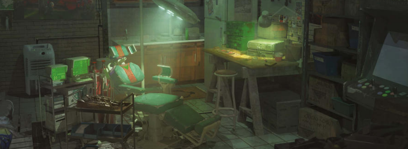

The Source

My name is Signal; an up-and-coming Media making a name for herself. I keep my ear to the ground and my finger on the pulse of our beautiful Night City, using my platform to protest and raise awareness of the evils Corporations commit at our expense.
That's not all, however. You'll also find some more lighthearted articles here for your enjoyment!
Past Broadcasts
An Interview with Robert Rainwater 5/4/2075
Ever heard of a ripperdoc who's anti-cybernetics? Read below for an exclusive interview!
This is a transcript of a previous broadcast
"Gooood evening Night City! My name is Signal, and welcome to INAC; a pirate broadcast containing all the coverage you need on everything anti corp, rising stars of the afterlife, and exclusive interviews with the most interesting people in Watson!
Tonight we have a special guest: Robert Rainwater, a man who has made a name for himself as an anti-cybernetics Ripperdoc. Thanks for coming on my show tonight Mr. Rainwater!"
"Thanks for having me, Signal. Good to be here."
"So, Mr. Rainwater, most rippers in Night City advocate for the use of implants and often chip-in themselves, but you seem to be rather outspoken about your distaste for cybernetics. Why is that?"
"Most people don't realise Signal, that the brain functions better when it's attached to real, not-synthetic musculature.
Replace even a single hand and you'll notice a dip in concentration and overall well-being. Cyberware's more harm than help."
"Interesting. So, you believe that the brain and body are meant to work together in a natural way? I can see that you take good care of your body Mr. Rainwater, is this to compensate for the fact that you don't want to use cyberware?"
"Yep. I work out every day to keep my body in good shape. Don't need to rely on cyberware to keep myself healthy and do my job."
"That's a very interesting perspective. I know that many people in Night City, me included, use and rely on cyberware to do our jobs. do you think that this is a bad thing?"
"Sure is. Unless you can afford supplements or therapy to manage the side effects of your chrome, your brain won't be able to keep a healthy connection with the implants in your body. Over time it's gonna deterioate and you'll lose more than just your concentration."
"You have a very unique stance, being a Ripperdoc yourself. Do you feel that your views on cyberware have affected your business?"
"Nope, Don't slow biz at all. I get chromers coming in that don't care for the dangers and get all kinds of implants fitted. Long as implants are available, gonks like that will always pay."
"That's good to hear. Well, I think that's all the time we have for today. Thank you for coming on the show Mr. Rainwater!
Certainly a unique perspective on cyberware and the human body, huh, dear listeners? I know that I personally rely on my optics to do my job, and I don't think I'd be able to do it without them. But hey, that's just me!"
Thanks for tuning in to INAC! As always, This is Signal on the pulse of Night City, signing off. See you next time!"